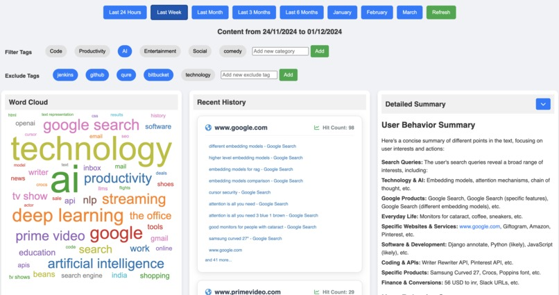
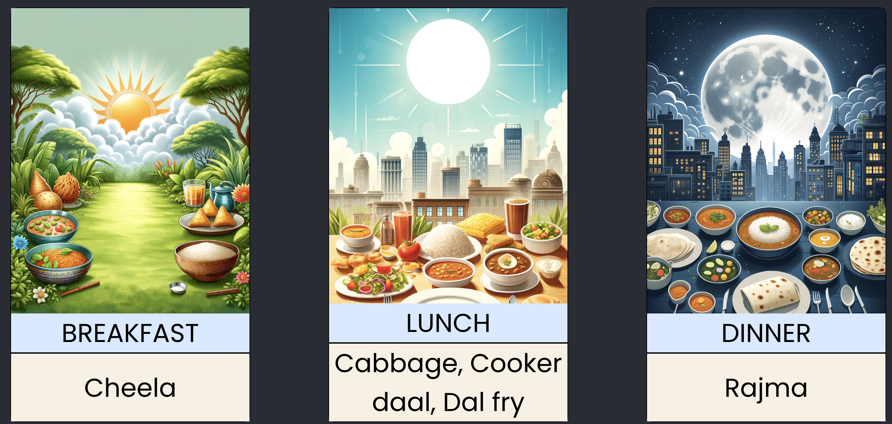
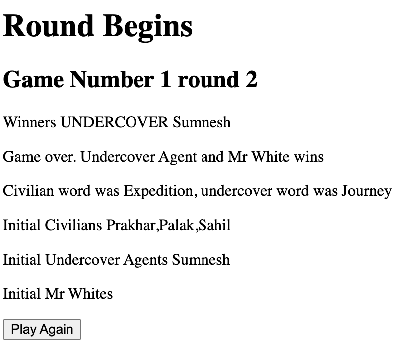

Digital Graveyard
Where my older personal projects rest in peace (but still work!)


TraceMyJourney
Live
Weekly Meal Planner
LiveA quick online table that allowed me and my flatmates to plan meals for the entire week and order groceries efficiently. Created a template for weekly meal planning, enabling users to set their entire week's meals in under 2 minutes. Features a chatbot that asks user preferences, demographics, and food preferences to generate personalized full week meal plans.

Undercover Agent Game
LiveA thrilling party game where civilians get one word and undercover agents get a similar word. Players must figure out who the undercover agent is through discussion and voting. Features over 4000 words and supports Mr. White, Civilians, and Undercover Agent roles.